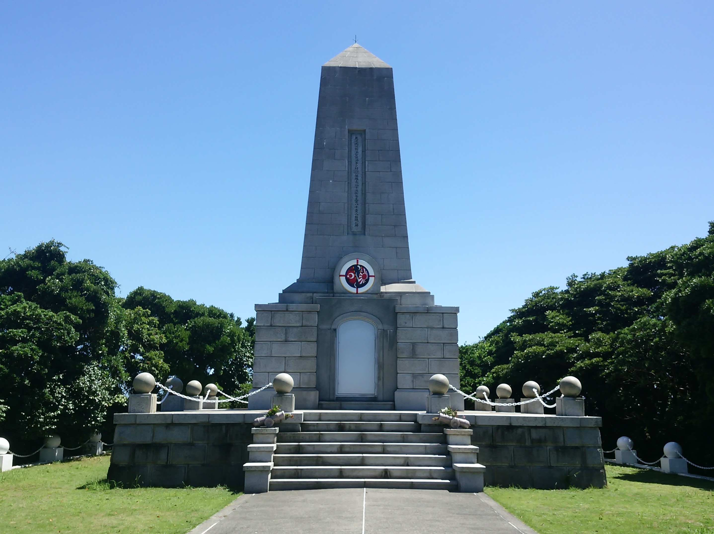
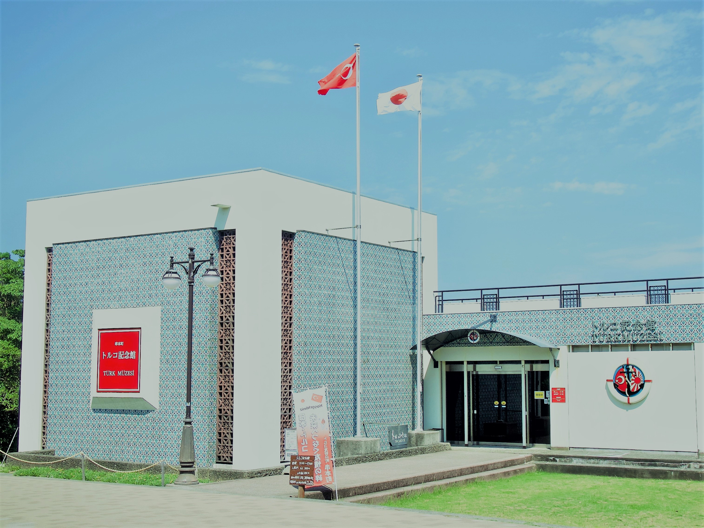
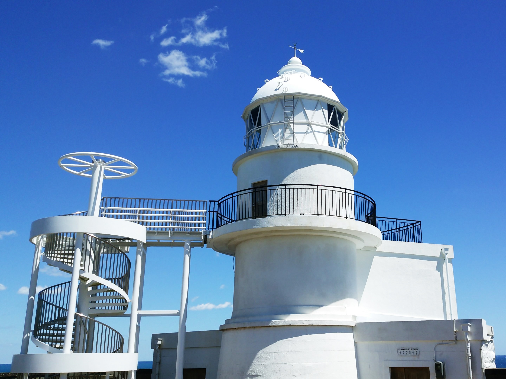

アジアとヨーロッパの境目に位置する西アジアの国、トルコが親日国となったきっかけは、
串本町の紀伊大島の村人たちの献身的な行動によるものでした。
エルトゥールル号遭難事件
明治20年(1887年)、小松宮彰仁親王のイスタンブール訪問に対してのお礼のため、
1890年にトルコ（当時はオスマン帝国）で、最初の親善訪日使節団が軍艦エルトゥールル号で日本を訪れました。
トルコに帰還する途中、台風の暴風雨の影響で、紀伊大島の樫野崎灯台付近で沈没し、600名以上が海に投げ出されました。
紀伊大島の人たちは住民総出で救護活動、看護をし、69名を救出。そして救出された69名は神戸で治療を受け、トルコへ丁重に送りました。
痛ましい事件でありながら、この紀伊大島の人たちの対応がトルコ中に感動を与え、日本とトルコの友好の原点となりました。
トルコはこのお礼に応える形で、1985年、イラン・イラク戦争で、215人の在留日本人全員をトルコ航空機で救出するという出来事がありました。
紀伊大島の見どころを紹介
トルコ軍艦遭難慰霊碑
- 
引き揚げられた遺体を樫野崎の丘に埋葬したと伝えられ、事故から翌年に有志の義捐金により墓碑と追悼碑が建てられました。
1929年、昭和天皇が樫野崎を訪れると聞いたトルコ初代大統領ムスタファ・ケマル・アタテュルクが新しい慰霊碑を建てることを決定し、樫野崎のこの広場に建てられました。
トルコ記念館
- 
串本町は二つのトルコの町と姉妹都市連携を交わし、トルコとの友好の証としてトルコ記念館を開館。
エルトゥールル号の模型や引き揚げられた遺品、事故当時の記録などが展示されています。
樫野埼灯台
- 
紀伊大島の東端の断崖に位置します。
日本の灯台の父と呼ばれるリチャード・ヘンリー・ブラントンが設計した、日本最古の石造灯台で、1870年（明治3年）に初点灯しました。
現在は自動点灯する無人灯台として活躍しています。
螺旋階段を登ると、太地町の梶取崎まで見渡すことができます。